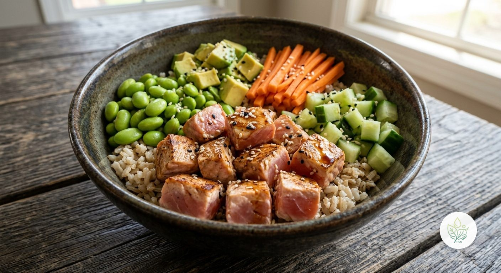

Poke Bowl de Salmón
AUn bowl completo estilo poke hawaiano: salmón sellado, arroz integral, edamame y verduras frescas, con un toque de salsa de soja baja en sodio y sésamo. Proteína, fibra y grasas saludables en un solo plato.
Este bowl combina el salmón, rico en omega-3, con arroz integral (más fibra que el blanco) y edamame, una legumbre con una cantidad de proteína inusualmente alta para ser una verdura. El pepino y la zanahoria aportan frescura y volumen con muy pocas calorías, y el aguacate suma grasa monoinsaturada. Usamos salsa de soja baja en sodio y en poca cantidad, ya que es uno de los condimentos más concentrados en sodio que existen — así conseguimos el sabor umami característico sin disparar el sodio del plato.
Ingredientes (toca el nombre para ver su ficha)
- 120 g
- 150 g
- 60 g
- 40 g
- 60 g
- 50 g
- 10 g
- 5 g
Elaboración
- Cuece el arroz integral según las instrucciones del envase y déjalo templar.
- Marca el salmón en una sartén muy caliente sin aceite, 1-2 minutos por cada lado, para que quede dorado por fuera y jugoso por dentro (estilo poke sellado).
- Corta el pepino y el aguacate en dados, y la zanahoria en juliana.
- Sirve el arroz de base en un bowl y coloca encima el salmón, el edamame, el pepino, el aguacate y la zanahoria en secciones separadas.
- Riega con la salsa de soja baja en sodio y espolvorea las semillas de sésamo.
Información nutricional (receta completa)
De las grasas, 6 g son saturadas · de los carbohidratos, 4.8 g son azúcares · sodio: 443.8 mg
Preguntas frecuentes
¿Cuántas calorías tiene la receta de Poke Bowl de Salmón?
Esta receta tiene 660.6 kcal en total (1 ración).
¿Puedo usar salmón crudo en vez de sellarlo?
Solo si es salmón etiquetado específicamente como apto para consumo crudo (congelado previamente para eliminar parásitos, según la normativa). Sellarlo brevemente en la sartén, como en esta receta, es la opción más segura para prepararlo en casa.
¿Es apta sin gluten?
La salsa de soja tradicional suele contener trigo; busca una versión sin gluten (tamari) si lo necesitas. El resto de ingredientes no llevan gluten.
¿Puedo sustituir el salmón por otra proteína?
Sí, el tofu o el pollo a la plancha funcionan igual de bien si prefieres no comer pescado.